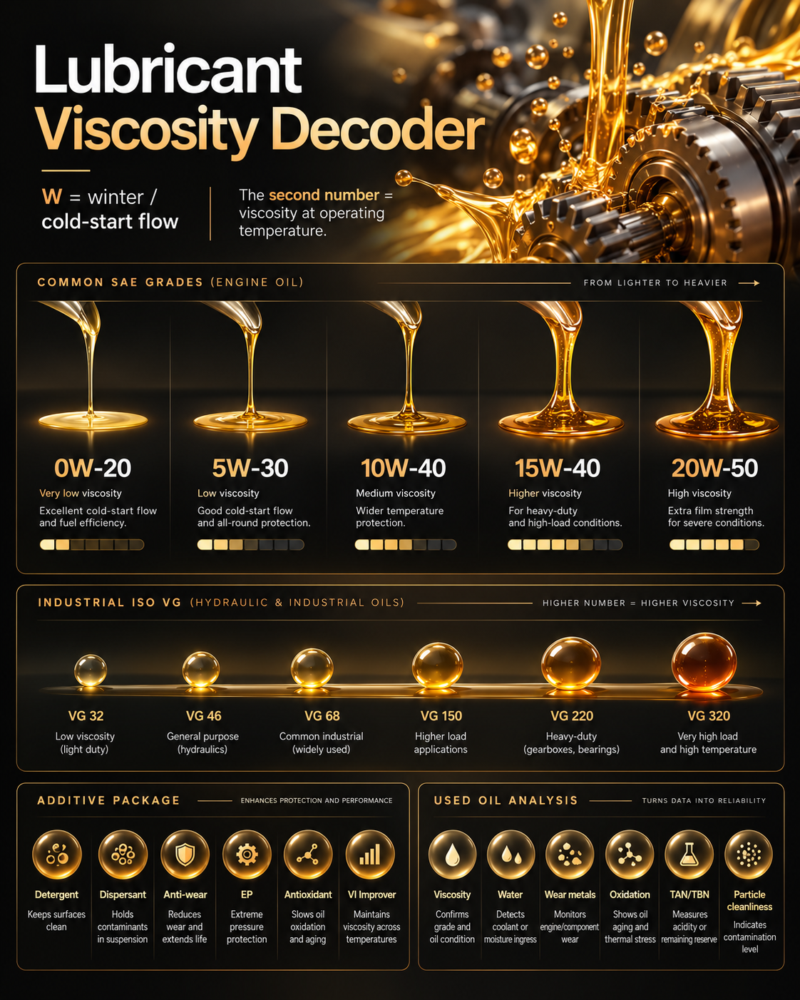

Lubrication knowledge presented as a structured field guide.
This page is intentionally separate from the main portfolio so recruiters can experience the technical side without cluttering the commercial story. It covers core concepts, application logic and practical explanations in a cleaner, more spacious format.
What a lubricant really does inside a machine.
A lubricant is not just a slippery fluid. In real machinery it creates a film, reduces friction, carries away heat, controls wear, suspends contaminants, protects against corrosion and supports reliability. The correct product is the one that matches the duty cycle, not simply the one with the most familiar grade.
How to read 0W-20, 5W-30, 10W-40, 15W-40 and 20W-50.
The number before the W speaks to low-temperature behaviour and cold-start flow. The second number describes viscosity at operating temperature. Together they help explain start-up performance, film thickness, efficiency and protection under load.

Industrial viscosity selection is about machine condition and duty.
For industrial equipment, the conversation often shifts from SAE to ISO VG. Hydraulic systems, gearboxes, bearings and compressors all rely on the right viscosity range, but the final choice depends on load, speed, temperature, contamination and equipment design.
Grease selection depends on thickener, base oil and operating condition.
Grease is not just “thick oil”. It is a lubrication system built from base oil, thickener and additives. The correct grease depends on bearing speed, load, temperature, contamination, relubrication interval and sealing conditions.
Base oil sets the platform on which the finished lubricant is built.
When technical stakeholders ask about lubricant quality, base oil is one of the smartest places to begin. It influences oxidation stability, volatility, low-temperature flow, cleanliness and the overall room available for formulation design.
HD oils have to do more than lubricate.
In heavy-duty engines the lubricant also manages soot, deposit control, oxidation, acid neutralisation and cleanliness. That is why additive balance matters so much. A fleet-facing or industrial discussion becomes stronger when the duty profile is translated into lubricant function.
Marine systems create a more layered lubrication discussion.
Marine lubrication is not one universal product conversation. Trunk piston engines, crosshead engines, cylinder oils, system oils, hydraulic systems, gears and compressors all bring different functional demands. Understanding that architecture makes commercial conversations more credible.
AdBlue is not a lubricant, but it matters in heavy-duty fleet conversations.
AdBlue, also known as Diesel Exhaust Fluid (DEF), supports SCR after-treatment systems in many modern diesel vehicles. Commercially, it often sits next to lubricant conversations because customers want one partner who understands both machine protection and emissions-support products.
The formulation toolbox behind performance.
Base oil sets the platform, but additives deliver much of the real-world behaviour. In conversations with technical stakeholders, being able to explain these functions helps position the lubricant as a performance system rather than just a commodity fluid.
What I would examine before recommending action.
Used-oil interpretation supports troubleshooting, condition monitoring and drain optimisation. Even at a commercial level, knowing what these indicators mean makes recommendations feel grounded and technically responsible.
A simple way to discuss lubricant selection with technical confidence.
When the product range gets wide, a structured selection flow keeps the conversation useful. The right lubricant is usually the result of a logical sequence: understand the machine, understand the duty, narrow the viscosity, then validate against the application environment and OEM direction.
what is being lubricated?
how hard and how hot does it run?
which grade and formulation fit?
confirm with OEM and performance expectation.